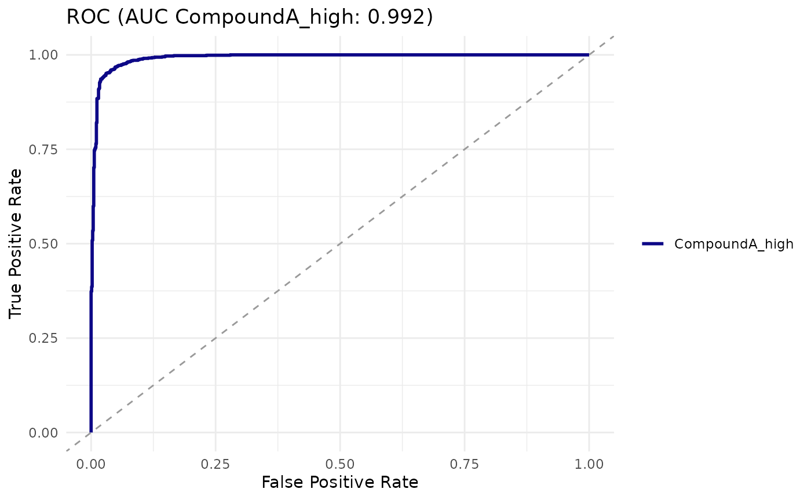

Statistical Analysis of Cell-Based Assays
Source:vignettes/statistical-analysis.Rmd
statistical-analysis.RmdWhy hierarchical testing matters
In a microscopy-based cell assay, each treatment condition is measured across several wells, and each well contains many individual cells. Cells are not independent: their fluorescence is correlated within a well (shared staining, focus, exposure). Treating every cell as an independent replicate inflates sample size and gives optimistic p-values.
cellreportR supports two standard resolutions:
- Cell-level tests treat each cell as a data point. Use these for distributional comparisons (e.g. is there a subpopulation shift).
- Replicate-level tests aggregate cells to one number per well, then test wells. Use these for the primary inference about whether a compound has an effect.
A defensible workflow is to run both and report effect size with CI alongside p-values at the replicate level.
A worked example
exp <- cr_example_experiment(seed = 2, n_cells_per_well = 60)
res <- cr_test(exp, "marker_1", "CompoundA_high", "Untreated",
test = "mann_whitney", level = "both")
res$cell_level
#> # A tibble: 1 × 8
#> level test statistic p_value n_x n_y median_x median_y
#> <chr> <chr> <dbl> <dbl> <int> <int> <dbl> <dbl>
#> 1 cell mann_whitney 904417 0 969 941 4143. 553.
res$rep_level
#> # A tibble: 1 × 8
#> level test statistic p_value n_x n_y median_x median_y
#> <chr> <chr> <dbl> <dbl> <int> <int> <dbl> <dbl>
#> 1 replicate mann_whitney 256 0.00000154 16 16 4175. 550.
res$effect_sizes
#> # A tibble: 4 × 5
#> method estimate ci_low ci_high magnitude
#> <chr> <dbl> <dbl> <dbl> <chr>
#> 1 cohens_d 2.22 2.12 2.35 large
#> 2 hedges_g 2.22 2.13 2.34 large
#> 3 cliffs_delta 0.984 0.977 0.989 large
#> 4 rank_biserial -0.984 -0.990 -0.978 largeNotice that the cell-level p-value is much smaller than the replicate-level p-value — a consequence of the inflated sample size.
Effect size interpretation
cellreportR computes Cohen’s d, Hedges’ g, Cliff’s delta and rank-biserial correlation. Conventional benchmarks:
- |d| < 0.2 — negligible
- 0.2 ≤ |d| < 0.5 — small
- 0.5 ≤ |d| < 0.8 — medium
- |d| ≥ 0.8 — large
Cliff’s delta benchmarks are 0.147 / 0.33 / 0.474.
set.seed(1)
cr_effect_size(rnorm(100, 1), rnorm(100, 0))
#> # A tibble: 4 × 5
#> method estimate ci_low ci_high magnitude
#> <chr> <dbl> <dbl> <dbl> <chr>
#> 1 cohens_d 1.23 0.959 1.62 large
#> 2 hedges_g 1.23 0.892 1.61 large
#> 3 cliffs_delta 0.616 0.474 0.731 large
#> 4 rank_biserial -0.616 -0.730 -0.490 largeROC / AUC for discriminability
When the question is “does this marker discriminate treated from control cells?”, fit a univariate logistic regression:
logit <- cr_logistic(exp, "marker_1", "CompoundA_high", "Untreated")
cr_auc(logit)
#> # A tibble: 1 × 4
#> auc ci_low ci_high method
#> <dbl> <dbl> <dbl> <chr>
#> 1 0.992 0.989 0.995 delong
cr_plot_roc(logit)
Multiple testing correction
cr_test_all() applies stats::p.adjust() by
default with the Benjamini-Hochberg method:
all_res <- cr_test_all(exp, "marker_1", "Untreated",
level = "replicate")
attr(all_res, "summary")
#> # A tibble: 5 × 6
#> treatment log2_fc p_value cohens_d p_adj interpretation
#> <chr> <dbl> <dbl> <dbl> <dbl> <chr>
#> 1 PosControl 3.10 0.00000154 2.23 0.00000386 strong
#> 2 CompoundA_low 0.916 0.0000312 0.831 0.0000520 strong
#> 3 CompoundA_high 2.92 0.00000154 2.22 0.00000386 strong
#> 4 CompoundA_ScavX 0.314 0.109 0.135 0.109 no evidence
#> 5 CompoundA_ScavY 0.578 0.0000433 0.538 0.0000541 moderatePower considerations
A quick hierarchical-aware power check:
cr_power_analysis(effect_size = 0.8,
n_replicates = 4,
n_cells_per_rep = 100,
n_sim = 200)
#> # A tibble: 1 × 5
#> effect_size n_replicates n_cells_per_rep alpha power
#> <dbl> <dbl> <dbl> <dbl> <dbl>
#> 1 0.8 4 100 0.05 1